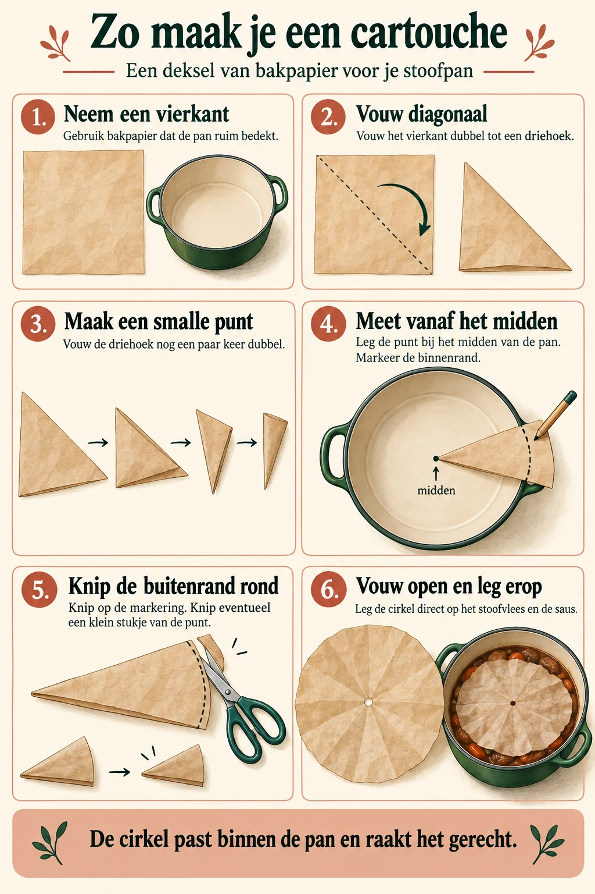

Stoofvlees met bier en mosterd uit de oven
Mijn stoofvlees is geïnspireerd op het Vlaamse stoofvlees van Eten met Nick. Ik gebruik een eetlepel mosterd zonder boterhammen en laat het vlees rustig garen in de oven, met een cartouche op het gerecht. Zodat het vlees onder blijft staan, en niet uitdroogt
Ingrediënten
- 1 kg runderlappen
- 2 grote uien, grof gesneden
- 2 eetlepels boter
- 2 flesjes donker Belgisch bier, bij voorkeur dubbel
- 2 laurierblaadjes
- Een paar takjes tijm
- 2 kruidnagels
- 2½ eetlepels appelstroop
- 1 eetlepel mosterd
- Peper en zout naar smaak
Benodigdheden: een ovenbestendige stoofpan en bakpapier voor de cartouche.
Mijn werkwijze
- Verwarm de oven voor op 120 °C. Bak de runderlappen eerst in hun geheel goed aan op de barbecue of in een grote pan. Geef het vlees echt kleur; het hoeft nog niet gaar te zijn.
- In het basisrecept staan twee grote uien. Ik gebruik vaak meer, tot wel een kilo ui, omdat ik dat lekker vind.
- Bak de grof gesneden uien aan in de pan waarin je het vlees hebt gebakken. Voeg, zodra ze wat kleur krijgen, de mosterd, het bier en de laurier toe. Doe de kruidnagels in een papieren theezakje, zodat je ze later makkelijk kunt verwijderen.
- Laat het bier heet worden, maar liever niet koken. Snijd de aangebakken runderlappen in blokken en voeg ze toe, samen met de appelstroop en de tijm.
- Verdeel het vlees gelijkmatig, zodat het net onder het vocht staat. Leg er een cartouche op en zet de ovenbestendige pan in de oven. Laat ongeveer vier uur stoven, totdat het vlees helemaal zacht is en makkelijk uit elkaar valt. Controleer tussendoor of er voldoende vocht is.
- Verwijder de cartouche, het kruidenzakje, de laurier en de takjes tijm. Proef en breng op smaak met peper en zout.
Een cartouche maken
Een cartouche is een rond vel bakpapier dat direct op het gerecht ligt. Het beperkt de verdamping; het vervangt niet het controleren van het vocht in de pan.
- Neem een vierkant vel bakpapier dat ruim groter is dan de pan.
- Vouw het vel dubbel en daarna nogmaals dubbel tot een kleiner vierkant.
- Vouw dit in een driehoek en nog een keer in een smallere punt. Houd de oorspronkelijke middenpunt steeds als punt van je vouw.
- Houd die punt boven het midden van de pan. Meet tot de binnenrand en knip de brede kant op die afstand in een boog af.
- Knip eventueel een klein stukje van de punt af voor een opening in het midden.
- Vouw het papier open tot een cirkel en leg die op het gerecht.


Bronvermelding
Eten met Nick, Vlaamse Stoof-Awesomeness: https://www.youtube.com/watch?v=XUNlo_o0nCI. De ingrediënten uit de videobeschrijving zijn het uitgangspunt. De mosterd zonder brood, de oven op 120 °C en de cartouche komen uit mijn eigen uitleg.